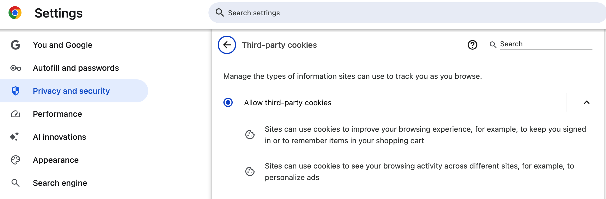
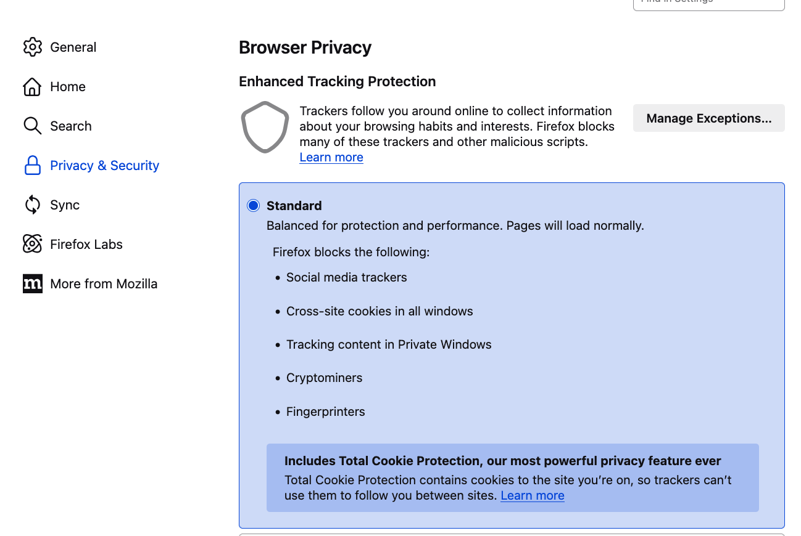
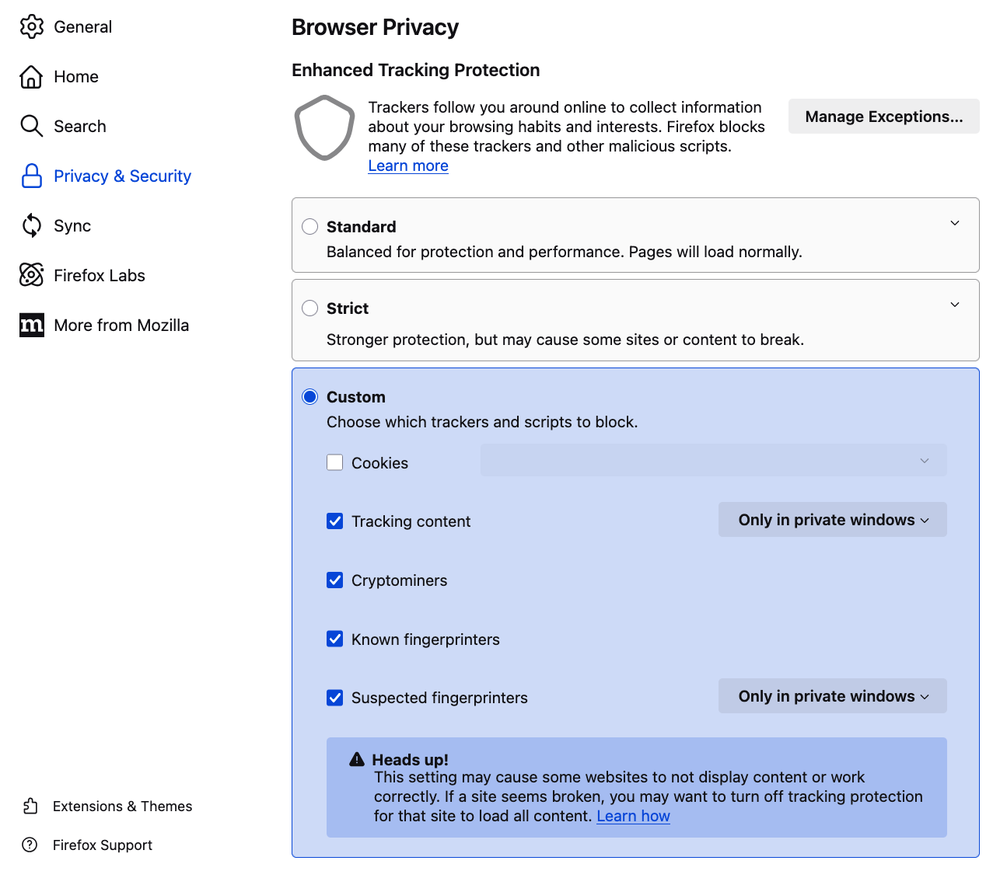
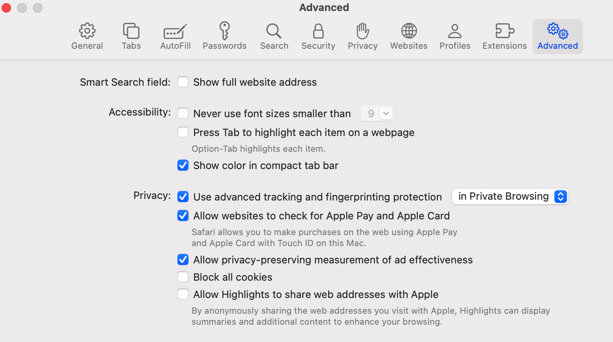
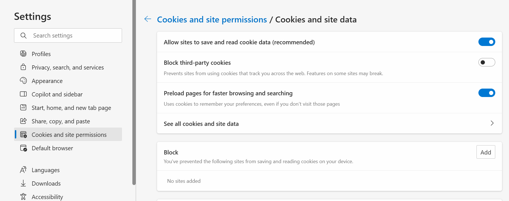
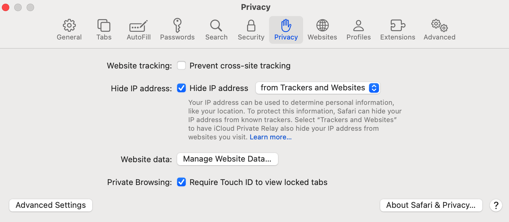
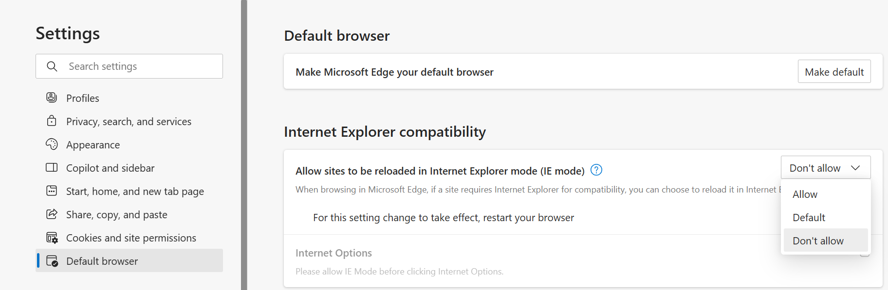

Web Security and Browser Capabilities¶
On this page you will find instructions on how to configure your cookies, firewalls, and browser support.
Cookie Requirements¶
To ensure Codio works properly, you must enable cookies in your web browser. Below you will find instructions on how to enable cookies for all sites. If you have any questions about how Codio uses cookies, please check our Privacy policy.
Enabling Cookies in Chrome:¶
Click the three-dot menu in the top right corner.
Go to Settings.
Click “Privacy and Security” tab in the main menu.
Select “Third-party cookies”.
Choose “Allow third-party cookies”.

Enabling Cookies in Firefox:¶
Open the menu (three horizontal lines) in the top right.
Go to Settings.
Select “Privacy & Security”.
Under “Enhanced Tracking Protection”, choose “Standard” or select “Custom” and uncheck “Cookies”.
Ensure third-party cookies are not blocked.

Note
Ensure third-party cookies are not blocked by checking the box “Allow Firefox to automatically trust third-party…”

Enabling Cookies in Safari:¶
Open the menu by clicking Safari in the top left.
Click on Settings.
Click the “Advanced” tab.
Uncheck “Block all cookies”.

If using an earlier version of Safari, check Always Allow in the Cookies and website data section
Enabling Cookies in Microsoft Edge:¶
Open Microsoft Edge on your computer.
Click the three dots (…) in the top-right corner to open the menu.
Select “Settings”.
In the left sidebar, click on “Cookies and site permissions”.
Click “Cookies and site data”
Make sure the toggle for “Block third-party cookies” is turned OFF.
Ensure “Allow sites to save and read cookie data (recommended)” is turned ON.

Firewall and Network Settings¶
Codio is designed to work in most browsers without special configuration. However, if you’re accessing it from a K-12 school or university network, certain firewall settings may require additional setup to function properly.
Below you will find more information about:
Network system administrators
Students and teachers who may be using Codio from home
Firewall Settings¶
The following is a list of ports and URLs that Codio accesses from time to time. We have put these in priority order.
*.codio.com the main Codio site and application
*.codio.io domains that are auto-generated for each user project
*.codio.co.uk the main site for Codio services in the UK.
*.codio-box.uk domains that are auto-generated for user projects in the UK.
api.keen.io statistics gathering to measure student time spent in units (stats)
*.typekit.net web fonts
fonts.gstatic.com web fonts
fast.fonts.net web fonts
*.cloudfront.net our CDN for speeding up static content
*.youtube.com & *.vimeo.com for videos included in Course content
gravatar.com used for user gravatars (pictures)
*.intercom.io, cdnjs.cloudflare.com and *.pubnub.com are highly recommended as they relate to the help and support application (Intercom) built into Codio.
If your institution blocks access to YouTube as a general rule, your IT department can whitelist YouTube access that only allows access to content from registered and accredited educational content repositories. See here for more information on this.
Working from home¶
Your anti-virus software or firewall settings on personal devices might occasionally interfere with Codio, potentially causing slower performance during home use. Temporarily adjusting these security settings may improve your experience. You should check your settings and ensure that items in the above Firewall Settings list are added to your exclusion list.
Connectivity Test¶
If you continue to experience difficulties, visit the Connection Diagnostics page and send us back the generated output.
Steps for sending us the generated output:
Go to your Codio dashboard.
Click on Support Chat found on the bottom left corner under “Help”.
Attach the output file using the paperclip icon.
Send the message.
Browser support¶
While Codio works with most browsers we recommend using the most recent versions of our fully supported browsers below:
Chrome
Firefox
Edge
Safari
Note(s):
If using Safari be aware that it can block preview cookies with their ‘Intelligent Tracking Prevention 2.0’ and cause assignments not to load.
If using Safari and accessing Codio via an LMS (Canvas/Blackboard/D2L/Moodle etc), disable “Prevent cross-site tracking” to ensure access.

If you continue to experience any disruptions in Codio, please send an email to help@codio.com.
Disable Microsoft Edge Compatibility View¶
It’s possible that if you have Microsoft Edge, we detect an older version of the browser(For example Internet Explorer).
This is due to the Compatibility Mode of the Browser which enables old features we no longer support.
To disable Compatibility View in Microsoft Edge, follow these steps:
Open Microsoft Edge.
Click on the three dots menu (⋯) in the top-right corner.
Select “Settings”.
In the left sidebar, click on “Default browser”.
Under “Internet Explorer compatibility,” look for the “Allow sites to be reloaded in Internet Explorer mode” option.
Click the dropdown menu on the right.
Click “Don’t allow”.

Note: Make sure to reload your browser after editing the setting.